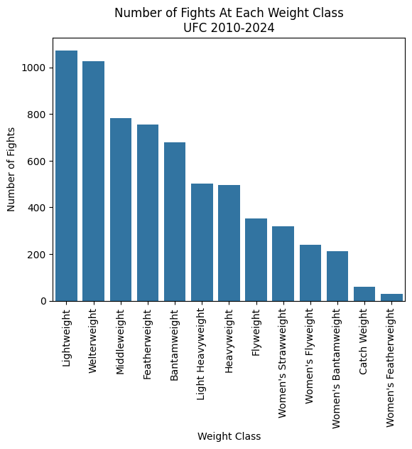
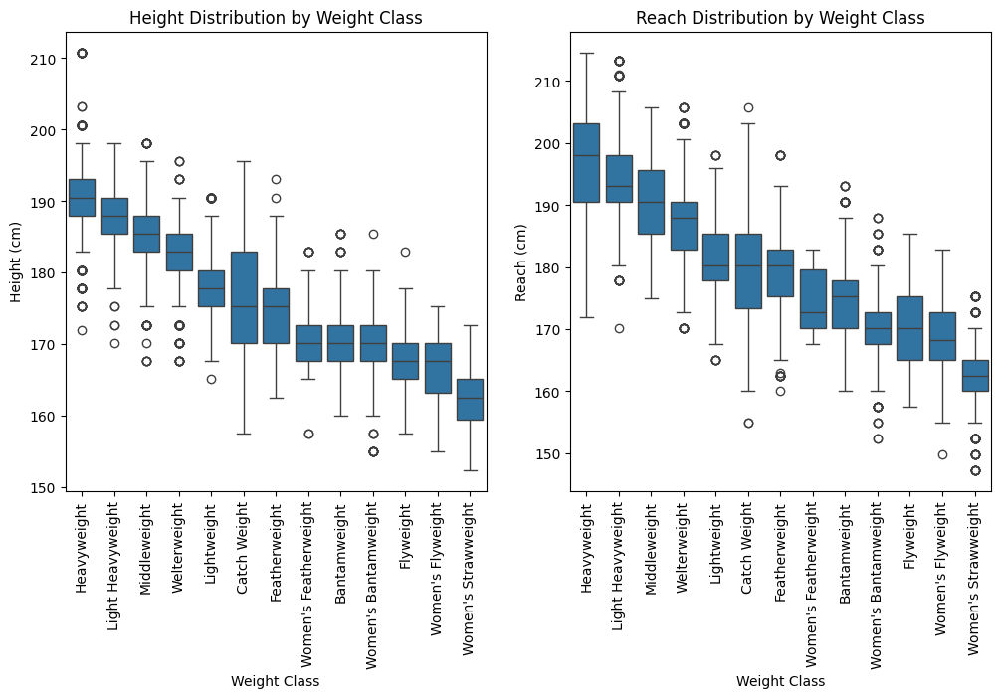
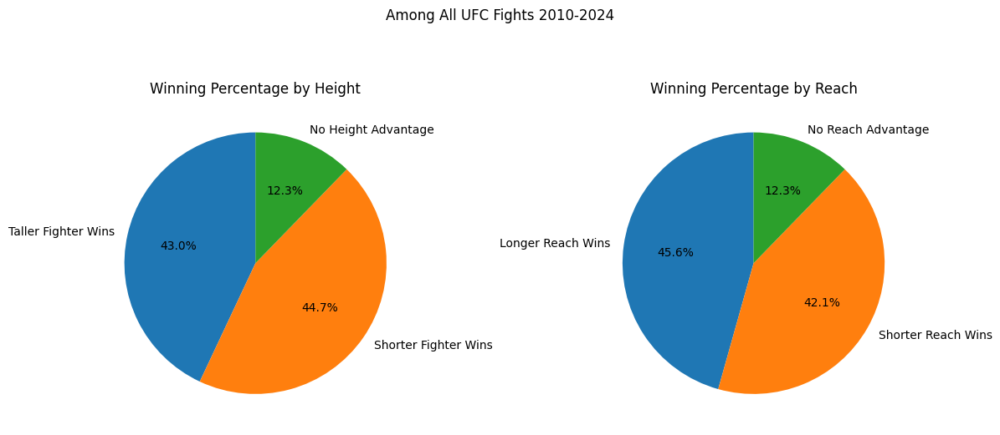
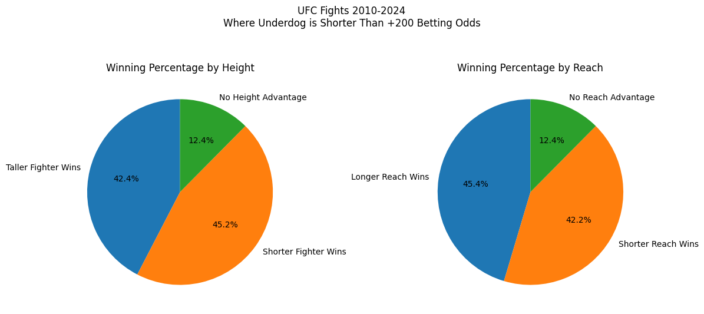
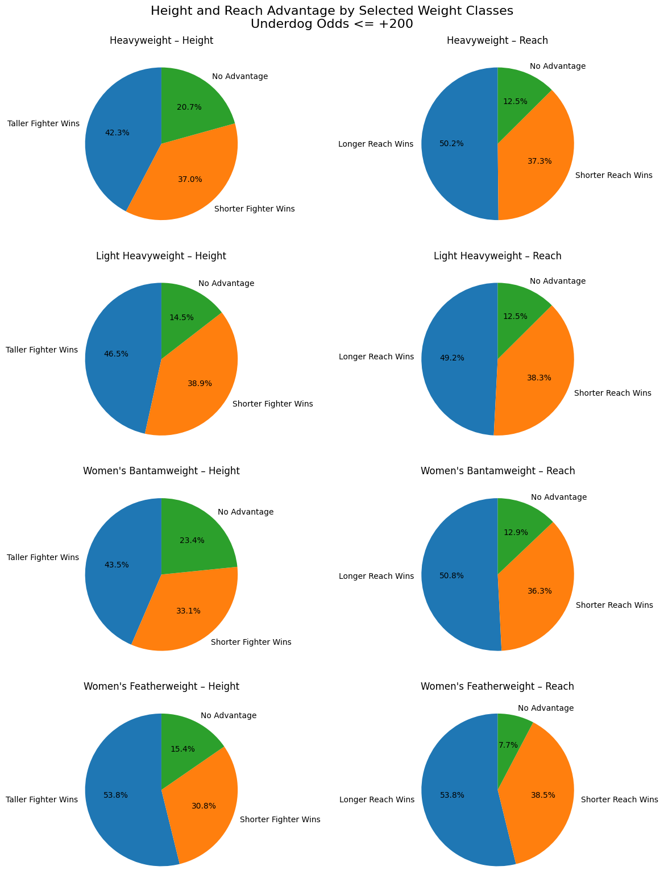
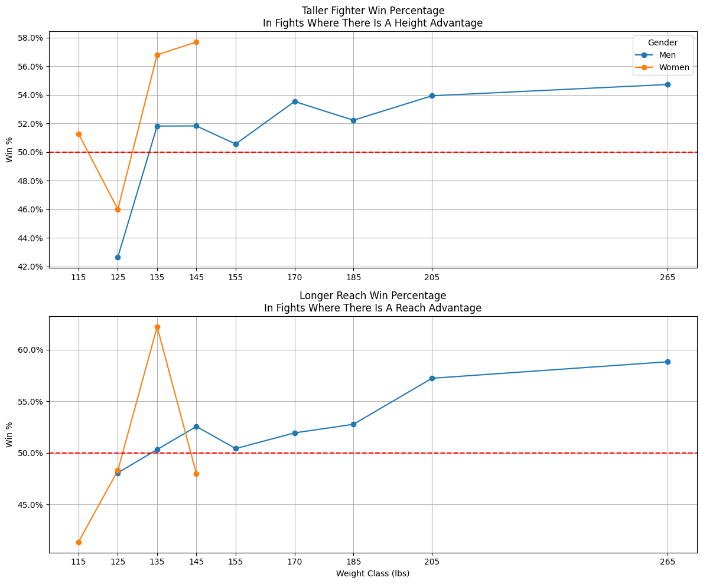
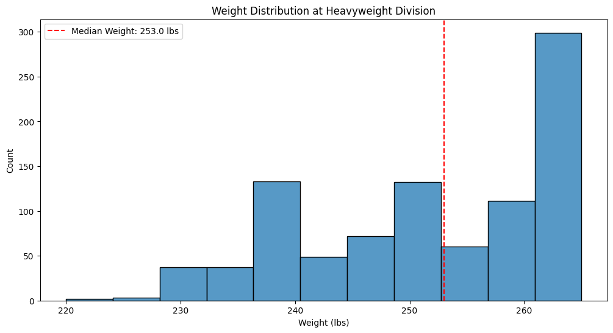
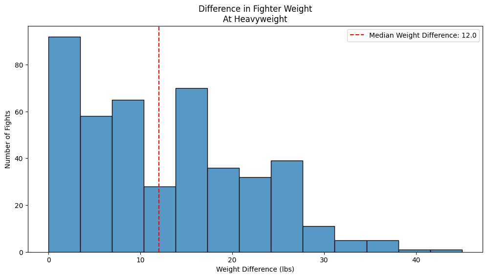
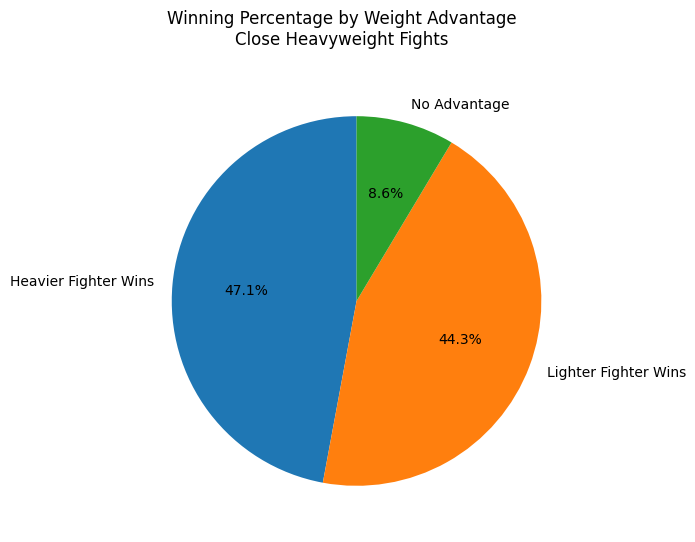
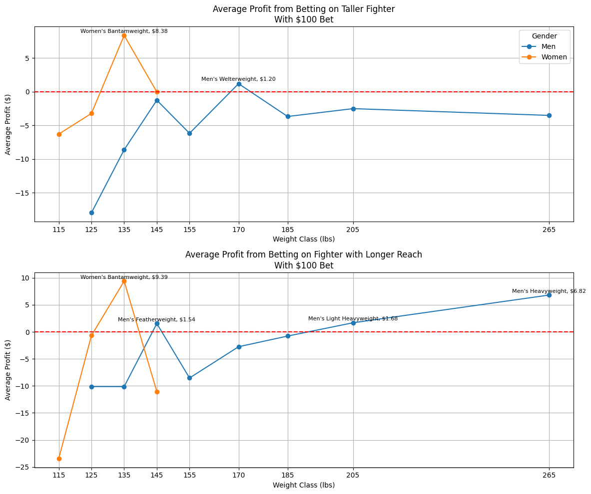

Index(['RedFighter', 'BlueFighter', 'RedOdds', 'BlueOdds', 'RedExpectedValue',
'BlueExpectedValue', 'Date', 'Location', 'Country', 'Winner',
...
'FinishDetails', 'FinishRound', 'FinishRoundTime', 'TotalFightTimeSecs',
'RedDecOdds', 'BlueDecOdds', 'RSubOdds', 'BSubOdds', 'RKOOdds',
'BKOOdds'],
dtype='object', length=118)For as long as humanity has been roaming the earth, fighting has been a part of our culture. Whether it be fighting over food as nomads, fighting over land in the feudal age, or fighting for natural resources in our current era, man always seems to find a reason for fighting.
Combat is not always confined to war, though. For centuries, we have been fighting for sport as well. Boxing matches have been recorded as far back as 6,000 BC and wrestling is thought to have been a part of the first ever Olympics. Nearly every culture across all history has had some form of combat sport as part of their culture.
With this apparent obsession with violent competition, it is natural to look for any edge that one combatant may have over the other. Turn on any boxing or MMA match and you are likely to see the “Tale of the Tape” displayed before the bout, showing each fighter’s age, record, height, reach, and weight. Of course, MMA has developed to now have weight classes so weight is less of a factor, but that wasn’t always the case.
Does any of this information really matter though? Does the taller fighter or the fighter with a longer reach really have an advantage, or are we just looking for advantages where there are none? Certainly any insights found here will be broad; actual fighting skill is paramount. For example, I am 6’ 4” 190 lbs, but I would not want to get into the octagon with a man like Dustin Poirier, who stands 5’ 9” and has fought at 145 and 155 lbs. I am not built for this. But perhaps among professional fighters with equal, or at least comparable, we can learn something.
The data used for this project comes from Kaggle user mdabbert and contains data from the UFC dating back to 2010. There are 118 columns available in this dataset. We’ll mostly focus on the columns containing information about the physical attributes of our fighters.
With this data in mind, let’s take a look at how many fights have occurred at each weight class, and a table of the weights for each for reference.
| Weight Limit (Lbs.) | |
|---|---|
| Strawweight (W only) | 115 |
| Flyweight | 125 |
| Bantamweight | 135 |
| Featherweight | 145 |
| Lightweight | 155 |
| Welterweight | 170 |
| Middleweight | 185 |
| Light Heavyweight | 205 |
| Heavyweight | 265 |

You may notice one extra class that is not in the weight class table: Catch Weight. That is just a term used for when a bout does not fit neatly into one of the existing weight classes. It is generally used when one or both fighters miss weight but still agree to continue with the fight.
The lightweight division is certainly the most popular division in the UFC. It is a good balance of speed and power, and has featured superstars and fan favorites like Conor McGregor, Khabib Nurmagomedov, Nate Diaz, Charles Olivera, Max Holloway, and the previously mentioned Dustin Poirier to name a few.

As expected, the distribution of height and reach roughly follows with weight classes - as weight goes up, so does reach and height. I do find it interesting, though, that most of the outliers at the heavier classes are below the class average. This doesn’t say anything to the success of any particular fighter, though, just an observation.

Interestingly, in fights where there is a height difference the shorter fighter wins more often, though the advantage is small. The fighter with the longer reach does win more frequently, but again, the advantage is tiny. As previously mentioned though, actual fight skill is most important. There are many fights in here that, on paper, are slated to be one-sided affairs.
It may be more advantageous for our purposes to look at fights where both sides are expected to be somewhat evenly matched.

I used underdog odds being shorter than +200 as my cutoff for what I considered an even match up. It’s an arbitrary number, to be sure, but we don’t see a real change from looking at all fights, and it doesn’t change when lowering the threshold to +150 either. This is a bit more surprising to me. Between supposedly equally matched fighters, I would have expected physical advantages, no matter how slight, to have a more pronounced effect. But that doesn’t seem to be the case.
This isn’t a small subset of fights either. 3,937 of the 6,528 fights (60.3%) recorded met the criteria for a “close” fight.
There are, however, a couple of classes where height and reach does make a sizable impact: Heavyweight, Light Heavyweight, Women’s Bantamweight, and Women’s Featherweight.

It’s interesting to note that these are the two heaviest divisions for both men and women. In fact, the trend seems to be that as the weight increases for the fight, height and reach become more important.

Heavyweights
The heavyweight division is unique among UFC weight classes. In other weight classes, fighters are generally cutting weight to come in right at the weight limit, meaning there is almost always no weight advantage. Generally, there are also only 10 lbs between weight classes, with a couple having 15 lbs between them. Heavyweights on the other hand have 60 lbs between their 265 lbs weight limit and the 205 lbs weight limit for light heavyweight.
This massive gap between weight classes means that there is a third physical characteristic that becomes potentially advantageous at the heavyweight division: weight.

Whereas in the other weight classes most fighters are coming in right at the weight limit, heavyweight has a median weight of 253 lbs, 12 lbs less than the class’ weight limit! As far as I can tell (using Tapology’s fight database), the UFC has not had a champion weigh in at the 265 lbs weight limit since Brock Lesnar won the belt in 2010. Lesnar weighed in at 264 lbs in his subsequent title defense and lost the title to Cain Velasquez who weighed in for the fight at 244 lbs.
This great variance in fighter weight naturally leads to match ups where there is a big difference between the two at the time of the fight. As demonstrated above, Lesnar and Velasquez had a 20 lbs weight difference for a championship fight.

To put this into perspective, the typical difference between two fighters at heavyweight, 12 lbs, is greater than the difference between two fighters at completely different weight classes at the smaller classes!
But does the fighter with the greater weight have any sort of advantage?

In these match ups between evenly matched heavyweights, the weight seems to play an. And it makes sense from a physics perspective. If we know that more mass leads to more force (assuming acceleration remains the same), then those fighters that weigh more can punch harder, doing more damage to their opponent if not knocking them out.
There are strategies to deal with an opponent who is taller or has a longer reach, but there is no way to out-maneuver physics.
On Betting
While humans love fighting, they perhaps love gambling even more. And with the rise in legalized sports gambling, many people are looking for any edge over the books that can help them make a few quick dollars.
It has already been demonstrated that, in most weight classes, there is not a clear advantage to height and reach, especially at the lower weight classes. But that doesn’t necessarily mean that it can’t a profitable strategy to bet on the fighter with the advantage.
Average profit betting on taller fighter: $-3.60
Average profit betting on fighter with longer reach: $-4.61Unfortunately, we aren’t beating the books by blindly betting on physical characteristics. At least not across all fights. As demonstrated above, however, the advantage becomes a little bit greater at the heavier weight classes. Perhaps that is where the money is.

Well, we’ve finally done it. We’ve found a way to beat Vegas (This is not gambling advice. Please do not use this strategy. A $8.38 average profit on a $100 bet is not worth the losses you will surely incur along the way.).
Earlier it was discussed that the winning percentages that stood out when looking at height and reach were to two heaviest weight class for each sex. When betting, of those classes discussed, only the women’s bantamweight division is profitable for both height and reach, the men’s light heavyweight and heavyweight divisions are only profitable by reach, and the women’s featherweight division is not profitable for either. The men’s featherweight division appears profitable for reach and the men’s welterweight division appears profitable for height. Despite the winning percentage of taller and longer fighters being so large for the women’s featherweight division, those fighters must be such large favorites that they are not worth betting on.
Finally, let’s take a look at the betting for the heavier heavyweights.
Average profit betting on heavier fighter at heavyweight division: $-6.30Similar to the phenomenon seen at the women’s featherweight division, we see the same thing when observing the effect of weight at the heavyweight division. The heavier fighter wins more frequently, but betting on them is not a profitable strategy. If you were to bet $100 on the heavier fighter in every heavyweight bout, you would expect to lose $6.31 on average.
Conclusion
Ultimately I am surprised that there is such little effect from physical characteristics across all divisions. Any advantages found are confined to a couple of divisions.
I enjoy watching mixed martial arts and generally watch it with a group of friends. When the tale of the tape comes up before a fight where we are unfamiliar with the fighters, we all speculate on who has the advantage based on their physical traits. It’s a way for us to get invested in the fight without any prior knowledge. We are wasting our breath, it appears.
It’s also interesting to see how much the sport varies between weights, even those that are close to each other. Going back and looking at the charts, there is always a break in the trend between featherweight and lightweight even though the two are separated by just 10 lbs and there are plenty of fighters who have fought in both divisions over the years. To me, this is a perfect demonstration of how the sport changes and fighters may alter their strategies at each weight class.
I didn’t find a perfect way to predict fights, but I think this gives some more clear insight into what does and does not matter in a fight, and drives home the point that the old saying is true: it’s not the size of the dog in the fight, it’s the size of the fight in the dog.